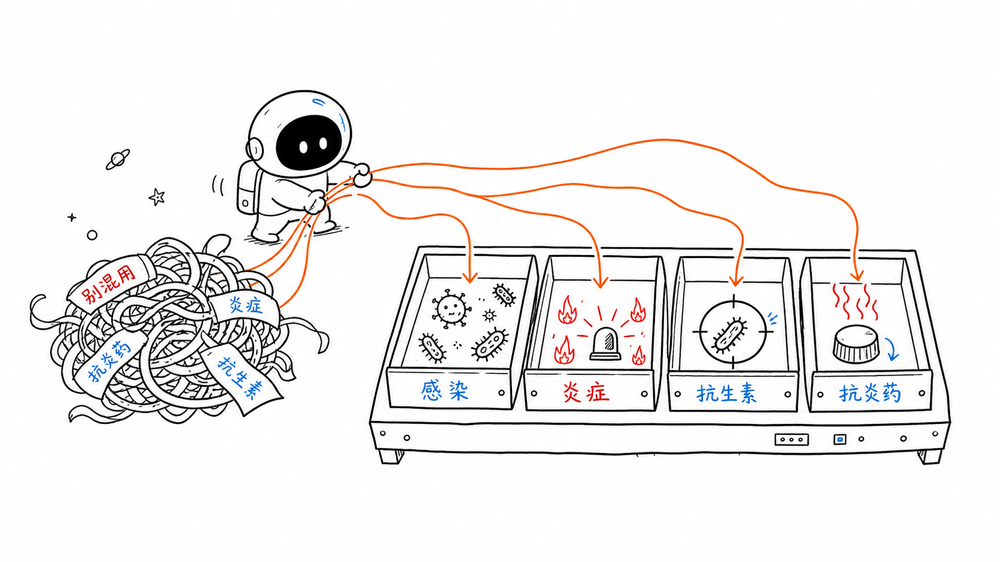
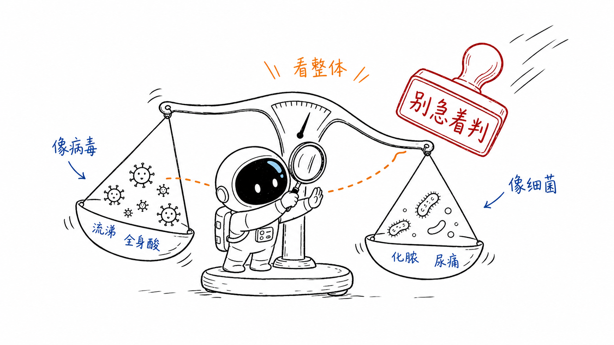
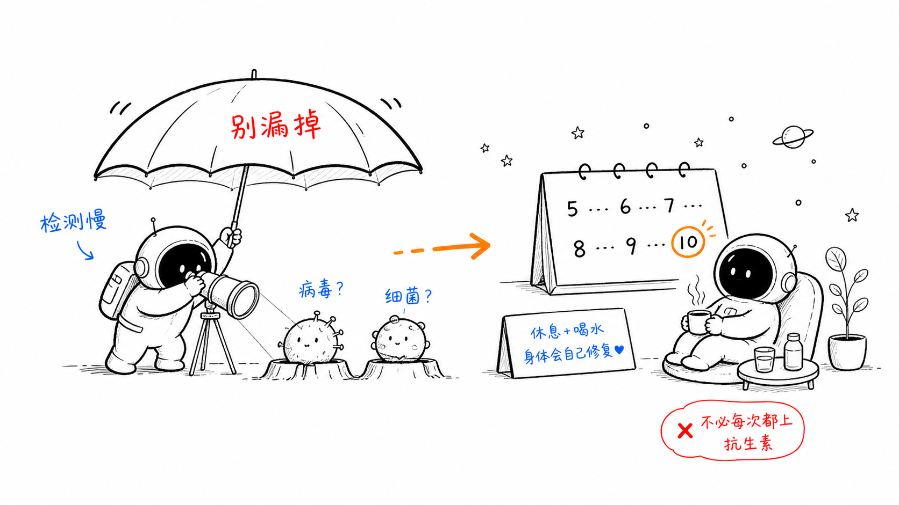
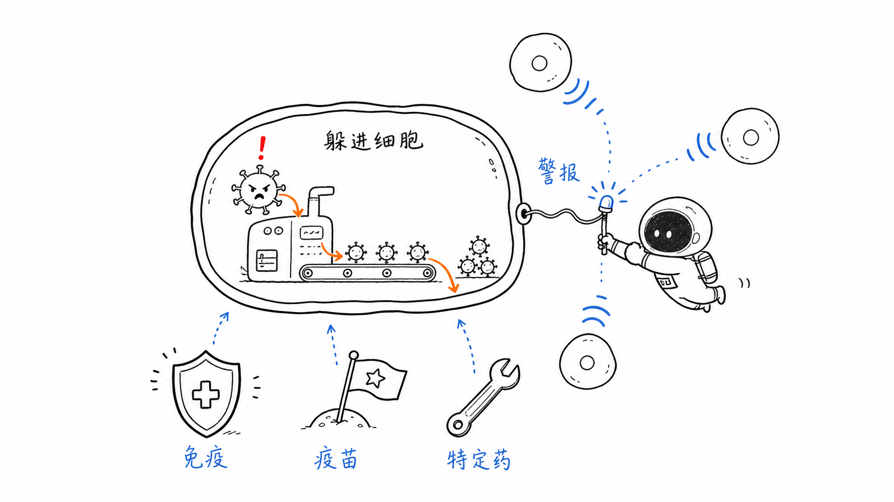
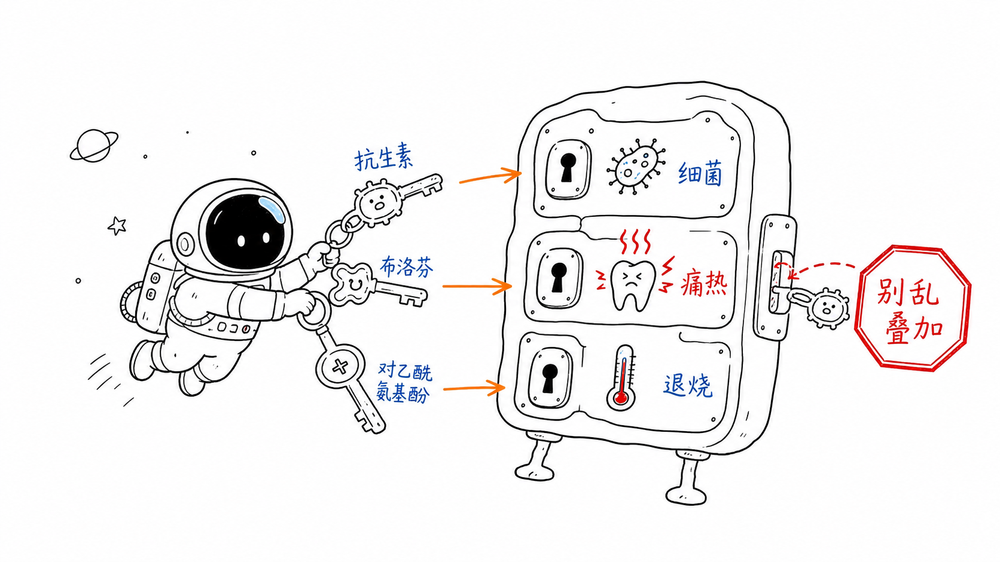
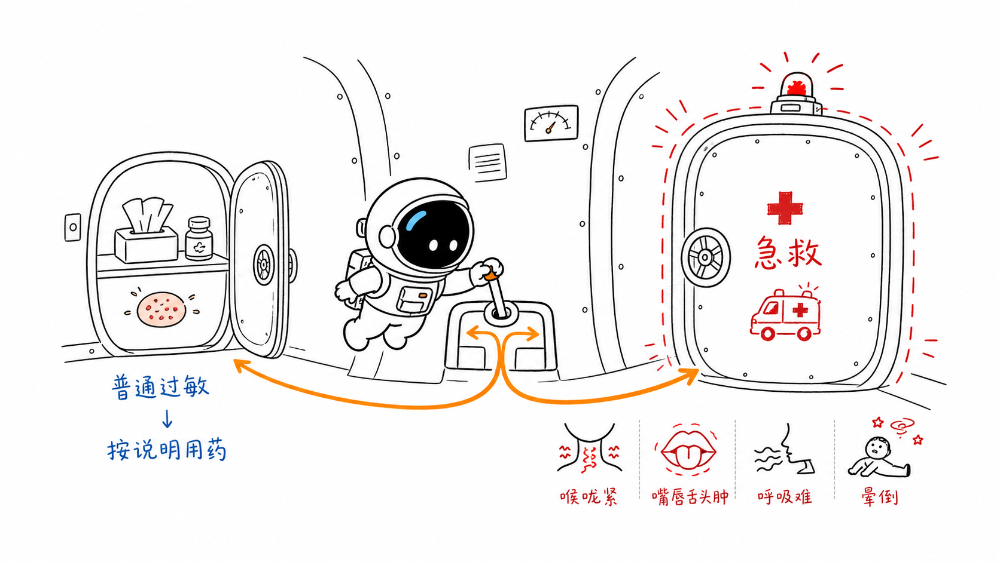
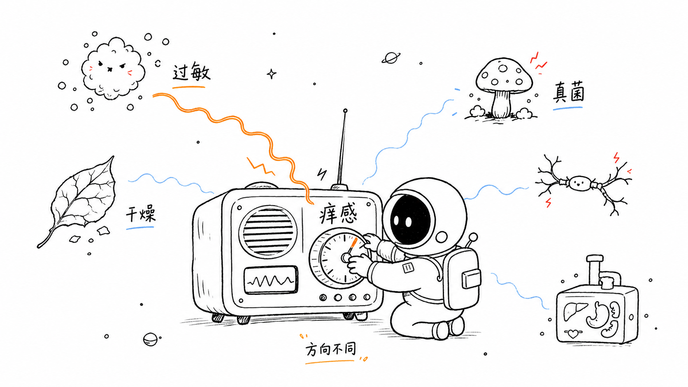
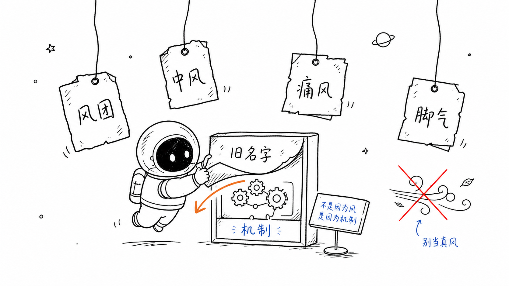
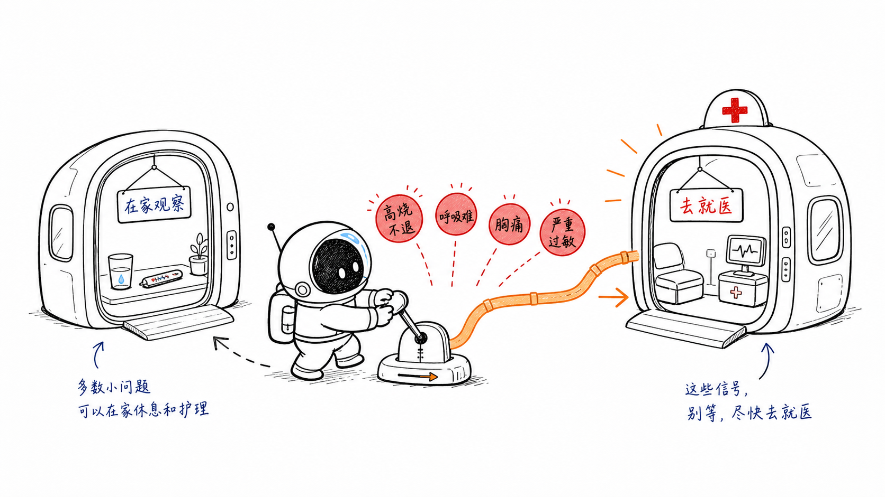

病毒、细菌、炎症、用药：一篇说人话的整理
把前面的问题重新分组：先搞清概念，再看常见病，再看药怎么用。适合手机慢慢读。
1. 先分清几个词
很多误会都来自一个点：把“感染”“炎症”“消炎药”“抗生素”混成了一件事。

举例：脚踝扭伤了，没有病毒，也没有细菌，但会红肿疼。这叫炎症，不叫感染。
流感是病毒感染，也会引起炎症。肺炎球菌肺炎是细菌感染，也会引起炎症。
一句话：炎症不是敌人，它像消防队。火小的时候不用乱扑；火烧大了，就要控制。
2. 病毒和细菌怎么区分
症状只能提示方向，不能百分百判断。发烧、黄鼻涕、黄痰，都不能单独证明是细菌感染。

| 更像病毒 | 更像细菌 |
|---|---|
| 流鼻涕、打喷嚏、咳嗽、喉咙痛、全身酸痛，常见于感冒、流感、新冠。 | 局部化脓、持续高烧、明显疼痛、尿痛尿频、伤口红肿流脓等。 |
常见病大致病因
| 疾病 | 常见原因 |
|---|---|
| 普通感冒 | 大多数是病毒 |
| 流感、新冠、手足口、水痘 | 病毒 |
| 化脓性扁桃体炎 | 常见为细菌，尤其链球菌 |
| 尿路感染 | 多数是细菌 |
| 中耳炎、鼻窦炎、肺炎、胃肠炎 | 病毒和细菌都可能 |
病毒感染后为什么会“变成”细菌感染
不是病毒变成细菌。是病毒先把黏膜、气道、皮肤屏障破坏了，细菌趁机上来。
比如流感：前几天高烧、酸痛，是流感病毒。过了几天本来要好，突然又高烧、咳脓痰、喘，这时可能合并细菌性肺炎。
3. 为什么以前总用青霉素
过去很多地方检测条件有限，医生很难快速判断是病毒还是细菌。为了“别漏掉细菌感染”，抗生素用得很宽。

还有一个心理误会：感冒本来 5～10 天会好。打了青霉素以后好了，人就容易以为是青霉素治好的。
关键点：青霉素、头孢、阿莫西林这类药对细菌有用，对单纯病毒性感冒通常没用。
4. 病毒感染怎么治
病毒难治，是因为它躲进人体细胞里复制。你要杀它，很容易伤到自己的细胞。

对病毒，医学主要有三招
- 靠免疫系统：普通感冒多数就是自己清除。
- 疫苗：提前训练免疫系统，比如流感疫苗、水痘疫苗。
- 抗病毒药：阻止特定病毒复制，比如奥司他韦用于流感，阿昔洛韦用于疱疹类病毒。
干扰素是什么
干扰素不是“直接杀病毒的药”。它更像细胞发出的警报：“附近有病毒，大家进入抗病毒状态。”
人体本来就会产生干扰素。医学上也可以人工制造，用在某些特定病毒病里。但它不是普通感冒的万能药，也可能带来发热、乏力、肌肉酸痛等副作用。
5. 消炎药、抗生素、止痛药怎么分

抗生素：杀细菌
常见名字：
青霉素类青霉素、阿莫西林、氨苄西林
头孢类头孢氨苄、头孢呋辛、头孢克肟、头孢曲松
大环内酯类阿奇霉素、红霉素、克拉霉素
沙星类左氧氟沙星、环丙沙星、莫西沙星
其他甲硝唑、克林霉素、复方新诺明
注意：抗生素不是普通“消炎药”。它不治病毒，不治过敏，不治扭伤。
非甾体抗炎药：退烧、止痛、抗炎
常见：布洛芬、双氯芬酸、萘普生、塞来昔布。
适合经痛、牙痛、肌肉关节痛、扭伤疼、发烧不舒服等。
对乙酰氨基酚：退烧、止痛
也叫扑热息痛。胃刺激相对小，但过量会伤肝。很多复方感冒药里也含它，不能重复叠加吃。
布洛芬不是任何情况都能吃
- 胃溃疡、胃出血风险高的人要谨慎。
- 严重肾病、明显脱水、呕吐腹泻喝不进水时要谨慎。
- 孕晚期不建议自行使用。
- 对 NSAIDs 过敏、有相关哮喘史的人不能乱用。
- 正在用抗凝药的人要问医生。
家庭记法：布洛芬是“让你没那么难受”，不是“把病根治好”。牙痛吃了不疼，牙该看还得看。
6. 过敏和氯雷他定怎么用
过敏就是免疫系统误报警。花粉、尘螨、猫毛、食物，本来未必危险，但身体把它们当敌人，于是释放组胺，出现痒、风团、流鼻涕、打喷嚏、眼睛痒。

常用抗过敏药
| 类型 | 例子 | 特点 |
|---|---|---|
| 第一代抗组胺药 | 扑尔敏、苯海拉明 | 容易困，开车前不适合 |
| 第二代抗组胺药 | 氯雷他定、西替利嗪、非索非那定 | 更常用，犯困少一些 |
| 鼻喷激素 | 布地奈德、氟替卡松 | 过敏性鼻炎常用，主要局部作用 |
| 肾上腺素 | 急救用 | 用于严重过敏反应，不是普通止痒药 |
氯雷他定到底怎么吃
- 偶尔过敏：出现症状后按说明书剂量吃。好了通常不用“巩固”。
- 过敏原还在：比如花粉季、每天尘螨过敏，可以连续规律吃一段时间。
- 慢性荨麻疹：如果风团反复持续数周，应让医生评估，常常需要规律用药。
不是药要“攒几天才有效”。而是过敏原因还在，所以可能需要连续控制。
这些不是普通小过敏：喉咙发紧、嘴唇舌头肿、呼吸困难、晕倒、全身迅速加重。要立刻急救，不要等氯雷他定慢慢起效。
7. 痒有哪些原因
痒不是一种病，是一种感觉。它可能来自皮肤，也可能来自神经或全身疾病。

| 原因 | 常见表现 | 处理思路 |
|---|---|---|
| 过敏 | 风团、鼻痒、眼痒、突然发作 | 避开过敏原，必要时抗组胺药 |
| 皮肤干燥 | 冬天、洗澡后痒，皮肤干裂 | 少用热水久洗，勤保湿 |
| 湿疹/皮炎 | 红、痒、反复，越抓越重 | 保湿，必要时外用抗炎药 |
| 真菌感染 | 脚趾缝痒、脱皮、潮湿处多 | 抗真菌药，不要乱涂激素 |
| 寄生虫 | 夜间特别痒，家人可能也痒 | 就医确认，比如疥疮 |
| 全身疾病 | 全身痒但皮肤看不出明显问题 | 查肝胆、肾、血液、内分泌等原因 |
有些痒不是组胺主导，所以吃氯雷他定不一定有效。比如湿疹、肾病、胆汁淤积、神经性瘙痒，处理方向都不一样。
8. 风湿、风团、中风这些名字怎么来的
很多病名是历史留下来的标签，不代表现代医学真的认为“风、火、湿”在身体里跑。

| 名字 | 现代理解 | 为什么这么叫 |
|---|---|---|
| 风团 | 荨麻疹的一种皮损 | 来得快、去得快，像风一样跑 |
| 风湿 | 风湿免疫类疾病的大范围说法 | 古人观察到阴冷潮湿时关节痛更明显 |
| 中风 | 脑卒中 | 突然倒下，像被风击中 |
| 痛风 | 尿酸结晶引起的关节炎 | 疼痛来得突然、猛烈 |
| 水痘 | 水痘-带状疱疹病毒感染 | 皮疹像小水泡 |
| 鹅口疮 | 口腔念珠菌感染 | 嘴里白白一层，像鹅口 |
| 鸡眼 | 局部角质增生 | 外观像鸡的眼睛 |
| 脚气 | 足癣，多数是真菌感染 | 俗名保留下来，不是“气”的问题 |
医生今天说“痛风”“中风”“风团”，只是沿用大家听得懂的名字。真正诊断还是看现代医学里的病因和机制。
9. 哪些情况别在家硬扛

- 高烧持续不退，精神很差，呼吸急促或胸痛。
- 感冒几天后本来好转，突然再次高烧、咳脓痰、喘。
- 严重过敏：喉咙紧、嘴唇舌头肿、呼吸困难、晕厥。
- 突然剧烈头痛、胸痛、持续腹痛、疑似骨折。
- 全身痒超过数周，尤其没有明显皮疹，或伴黄疸、消瘦、发热。
- 婴幼儿、孕妇、老人、有基础病的人，用药前更要谨慎。
这篇是帮助理解常见概念，不替代诊断。真正用药要看年龄、体重、病史、过敏史、基础病和说明书。